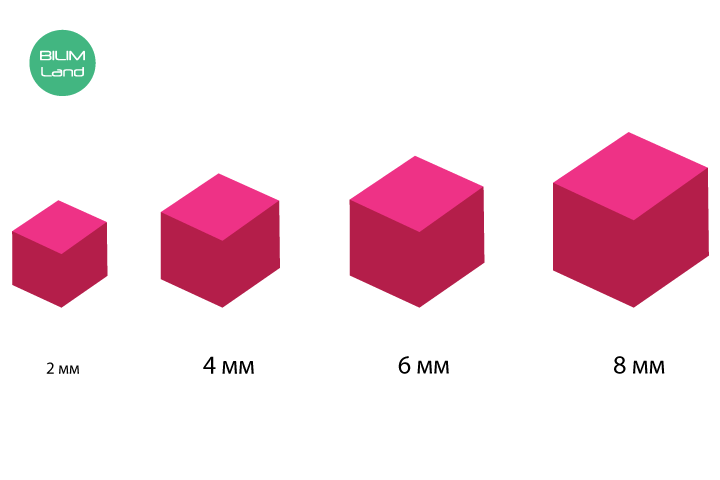

0,5 л 0,1% -дық HCl ерітіндісі
№4 зертханалық жұмыс
«Жасушаның беттік аудан мөлшерінің көлемге қатынасын анықтау»
Мақсаты: беттік ауданнның жасуша көлеміне қатынасының мәнін есептеу және осы шаманың заттарды тасымалдаудағы (диффузия) рөлін түсіндіру.
Құралдар
агар-агар
қағаз майлықтар
пластик қасық
пластик пышақ
стақан (көлемі 250 мл)

сызғыш
резеңке қолғаптар
қорғаныш көзілдірік
лакмус
Жұмыс барысы:
Суретте өлшемі 1 мм болатын текше көрсетілген.
- 1. 1 мм текшенің беттік ауданын анықта. Текшенің әр жағы 1 мм ауданды құрайды. Текшенің алты жағы бар, сондықтан барлық беттік аудан 6 мм2 құрайды. (1 мм х 1 мм х 6 алты жағы = 6 мм2).
- 2. 1 мм текшенің көлемін есептеу үшін 1 мм көбейтіледі: 1 мм х 1 мм х 1 мм = 1 мм3. Текшенің көлемі 1 мм3 тең болады.
- 3. Беттік ауданның көлемге қатынасын есептеу төмендегідей: 6:1=6/1= 6 жүргізіледі. Олай болса, 1 мм текшенің беттік ауданның көлемге қатынасы 6-ны 1-ге бөледі (6:1).
1. Фенолфталеин ерітіндісінде боялған таңқурай түсті әртүрлі өлшемдегі төрт агар текшесін дайында.
2. Төрт химиялық стакан.
3. 1% тұз қышқылы.
4. Секундомер

- 1. Төрт химиялық стаканды: 2 мм, 4 мм, 6 мм және 8 мм деп маркермен белгіле.
- 2. Тиісті химиялық стаканға бір текше агардан сал.
- 3. Төрт стаканның барлығына 1% тұз қышқылын әр агар текшесі толығымен батырылғанша қос. Тұз қышқылы алдымен 8 мм белгіленген стаканға қосылады.
- 4. 2 мм деп белгіленген стаканға тұз қышқылын қосқаннан кейін секундомерді қосып, уақытты белгіле. Тәжірибе кезінде секундомерді тоқтатпа.
- 5. Әрбір таңқурай түсті агар текшесі қышқылдың әсерінен түссізденеді.
- 6. Әр текше тек толық түске боялғанға дейінгі уақытты секундпен жаз.
- 7. Алынған нәтижелерді кестеге толтыр.
- 8. Әр пішінді агар текшесі үшін диффузия жылдамдығын мына формула бойынша есепте:
Диффузия жылдамдығы = текшенің жарты қыры/ уақыт,
текшенің толық түссіздену уақыты
Қышқылдың әсерінен агар текшесінің түссізденуі.
Тәжірибе нәтижесі:1% тұз қышқылында агар текшесінің толық түссіздену уақыты
Есептеу мысалы:- 1. Агар текшесіндегі беттік ауданы 4 мм болғанда:
- 4 мм (текшенің бір жағы) х 4 мм (текшенің екінші жағы) х 6 текшенің алты жағы = 96 мм2
- 2. Агар текшесінің көлемі 4 мм:
- 4 мм х 4 мм х 4 мм = 64 мм3
- 3. Беттік ауданның 4 мм агар текшесінің көлеміне қатынасы:
- 96 (беттік аудан) : 64 (көлем) = 96/64 = 1,5 (1,5:1)
- 4. Диффузия жылдамдығы:
- 2 мм ( 4 мм текшенің жартысы) : 50 (секунд) = 0,04 мм с-1
|
Сызықтық өлшем(мм) |
Беттік аудан (мм2) |
Көлем (мм3) |
Беттік ауданның көлемге арақатынасы |
Текшенің толықтай түссіздену уақыты(с) |
Диффузия жылдамдығы (мм с-1) |
|
2 |
24 |
8 |
3:1 |
20 |
0,05 |
|
4 |
96 |
64 |
1,5:1 |
50 |
0,04 |
|
6 |
216 |
216 |
1:1 |
80 |
0,03 |
|
8 |
384 |
512 |
0,75:1 |
120 |
0,03 |
Егер беттік ауданның көлемге қатынасы жоғарылайтын(зерттеуші қалауы бойынша өзгертеді) болса, онда диффузия тез жүреді (тәжірибе нәтижесі).
Қорытынды:- 1. Беттің ауданы мен көлемінің қатынасы текше көлемінің өсуіне байланысты азаяды немесе көбейеді.
- 2. Беттік ауданның көлемге қатынасы өскен сайын диффузия жылдамдығы артады.
Білім алушылар үшін жұмыс барысы
Зерттеу жүргізу үшін жұмыс басталмай агар-агардан желе дайындап қою керек
- 1. 1 ас қасық агар-агар ұнтағына 200 мл суық су құйыңдар.
- 2. Бөлме температурасында 1 сағат ұстаңдар.
- 3. Отқа қойып, қайнағанша араластырыңдар. Салқындатыңдар.
- 1. Пластик пышақпен агар-агар желесін 3 см,2 см,1 см өлшемде 3 текшеге бөліңдер.
- 2. Текшелерді стақанға салып, 0,1% - дық HCl ерітіндісін текшелер толық бататындай құйыңдар. Пластик қасықпен текшелерді абайлапа 10 минуттай аударыстырыңдар(теріге,көзге HCl тиюіне жол бермеңдер.Тиген жағдайда 10 минут бойы ағынды сумен жуыңдар немесе ас содасының әлсіз ерітіндісімен бейтараптаңдар.
- Кестені толтырыңдар.
|
А текшенің өлшемі, см |
6 * А2 текше бетінің ауданы, см2 |
А3 текше бетінің көлемі, см3 |
6*А 2 А3 Беткі ауданның текше көлеміне қатынасы |
Диффузия дәрежесі |
|
3 |
|
|
|
|
|
2 |
|
|
|
|
|
1 |
|
|
|
|
|
0,01 |
|
|
|
|
Өз зерттеулерінде мына өлшемдерді қолданыңдар:
1)беттік аудан: S = ұзындығы * ені * жақтар саны;
2)көлем: V = ұзындығы * ені * биіктігі;
3) беттік ауданның көлемге қатынасы:
S
__
V
4) Пластик қасықпен стақаннан текшелерді алыңдар. Қағаз майлықпен сүртіп, толық кепкенін күтіңдер.
Әр текшені екі бөлікке бөліңдер.Миллиметрлік сызғышпен тұз қышқылының әр текшедегі диффузия дәрежесін анықтаңдар.Мәліметтерді кестеге толтырыңдар.
5.Агар-агар желе текшелерін кішіреюі реті бойынша орналастырыңдар.Суретін салыңдар. Агар-агар желе текшелерін беттік ауданның көлемге қатынасының кішіреюі реті бойынша орналастырыңдар. Суретін салыңдар Қорытынды жасаңдар: текше көлемі мен беттік ауданның көлемге қатынасының арасында қандай байланыс бар?
6.Қайсысының беттік ауданы үлкен: қабырғасы 3см-лік текше ме,әлде көлемі пияз эпидермисінің жасушасымен бәрдей микроскопиялық текше ме (0,01см)? Көлемге қатысты беттік ауданның мөлшері ше?
7.HCl – дың агар-агар текшесіне енуін қалай дәлелдеуге болады? Барлық текшелер үшін HCl-ң диффузия жылдамдығы бірдей болатынын қалай дәлелдеуге болады?
8.Қорытынды жасаңдар.
Диффузия жылдамдығы мен жасуша мөлшерінің арасында қандай байланыс бар? Неліктен ірі ағзаларда ірі жасушалардың саны көп болудың орнына ұсақ жасушалар көбірек болады?
Дескриптор
|
|
Зерттеу жүргізеді. |
|
|
Есептеулер жүргізіп,кестені дұрыс толтырады. |
|
|
Нәтижелерді талдап,сұрақтарға дұрыс жауап береді. |
|
|
Беттік аудан мөлшерінің диффузия жылдамдығы мен көлеміне қатынасының байланысын дұрыс түсіндіріп, қорытынды жасайды. |